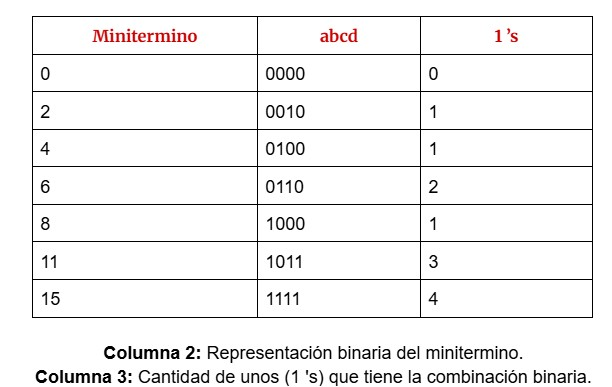

El método de Quine-McCluskey cumple con la necesidad de utilizar un procedimiento para simplificar desarrollos en sumas de productos, que pueda automatizarse. Se puede utilizar para cualquier cantidad de variables. Fue desarrollado en los años cincuenta por W. V.
Quine y E. J. McCluskey.
Básicamente, el método de Quine-McCluskey consta de dos partes:
La primera parte determina qué términos son candidatos para incluir en un desarrollo mínimo como suma booleana de productos booleanos.
La segunda parte determina cuáles de esos términos se utilizan finalmente.
(Lalaandrea, 2017)
Ejemplo
Minimizar la siguiente expresión y obtenerla como suma de productos: f(a,b,c,d) = ∑(0,2,4,6,8,11,15)
Paso 1: Generar la tabla de verdad para Quine-McCluskey
Imagen 1

Tabla de verdad
Zaldívar, s. f.
Paso 2: Agrupación de acuerdo a la cantidad de unos (1's)